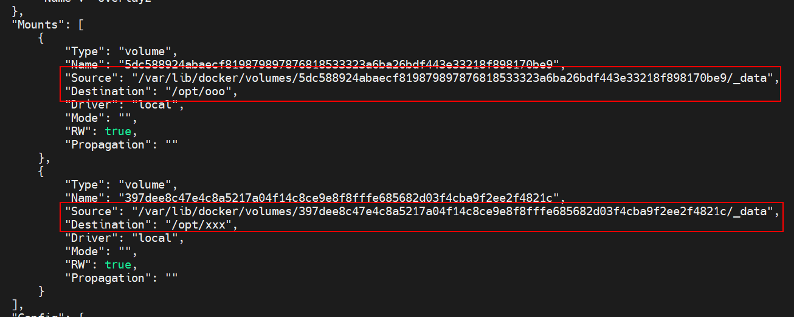

持久化概述
在容器层的 UnionFS（联合文件系统）中对文件/目录的任何修改，在该容器丢失或被删除后这些修改将全部丢失。
若要保存下来这些修改，通常有两种方式：
- 定制镜像持久化：将这个修改过的容器生成一个新的镜像，让这些修改变为只读的镜像（仅修改一次的配置文件等）
- 数据卷持久化：将这些修改通过数据卷同步到宿主机（频繁修改的实时数据文件等）
定制镜像持久化
对某个镜像进行修改(进入容器修改文件、以它为基础镜像写Dockerfile……)产生适合自身需求的新镜像
进入容器修改文件情况如下
- 运行初始镜像，进入容器修改
- 执行 docker commit 命令，以当前运行的容器为范本生成镜像
数据卷持久化
Docker 提供了三种实时同步（宿主机与容器 FS 间数据的同步）方式：
| 类型 | 声明方式 | 数据位置 | 说明 |
|---|---|---|---|
| Named Volume(命名卷) | docker run -v < volume-name>:/container-path IMAGE ; Dockerfile VOLUME 指令 | 不能指定路径，放在Docker 管理区(/var/lib/docker/volumes/) |
空卷首次挂载时，Docker 会自动把镜像挂载点里的文件复制进卷，之后卷的内容优先，屏蔽容器原有文件 |
| Bind Mount(绑定挂载) | docker run –it –v /host-path:/container-path IMAGE | 宿主机任意自定义指定路径 | 空卷首次挂载时，Docker 会自动把镜像挂载点里的文件复制进卷，之后卷的内容优先，屏蔽容器原有文件 |
| tmpfs(内存挂载) | docker run –it –tmpfs /data IMAGE | 宿主机内存 | 不推荐 |
数据卷与挂载点
宿主机中的一个文件/目录与容器中的另一个文件/目录进行了直接关联，在任何一端对文件/目录的写操作，在另一端都会同时发生相应变化
在宿主中的这个文件/目录就称为数据卷，而容器中的这个关联文件/目录则称为该数据卷在该容器中的挂载点
数据卷的设计目的就是为了实现数据持久化，其完全独立于容器的生命周期，属于宿主机文件系统，容器被删除时，不会删除其挂载的数据卷
- 数据卷在容器启动时初始化到挂载点
- 双方内容一致
- 数据卷会一直存在，即使挂载数据卷的容器已经被删除
- 数据卷可以在多个容器之间共享和重用
挂载数据卷命令
Named volume（命名卷）
|
|
Bind Mount(绑定挂载)
|
|
Dockerfile VOLUME 指令
VOLUME 指令可以在容器中创建可以挂载数据卷的挂载点。创建的是Named volume（命名卷）; 不推荐使用，因为不能指定数据卷名字 与 指定路径
其参数指定只能指定挂载点；可以是字符串数组，也可以是使用空格隔开的多个纯字符串。例如，VOLUME ["/var/www", “/etc/apache”] 或VOLUME /var/www /etc/apache
docker inspect 查看当前容器中的挂载点与宿主机数据卷对应关系
